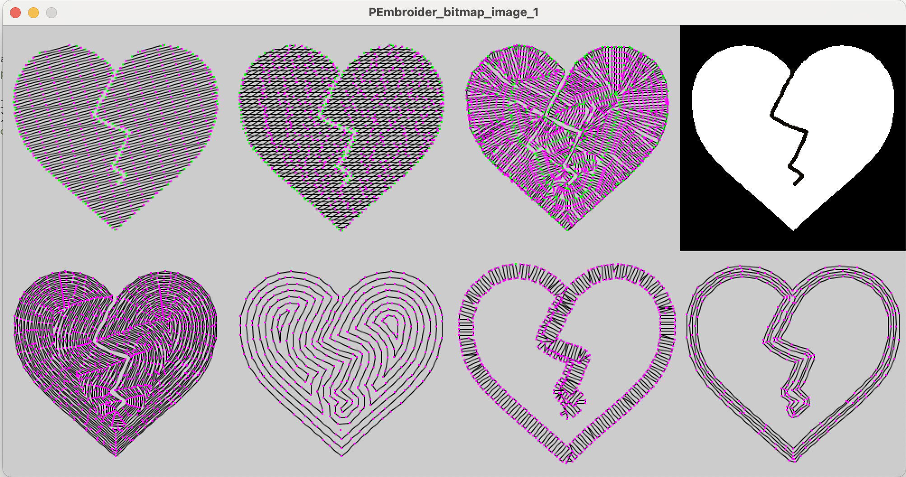
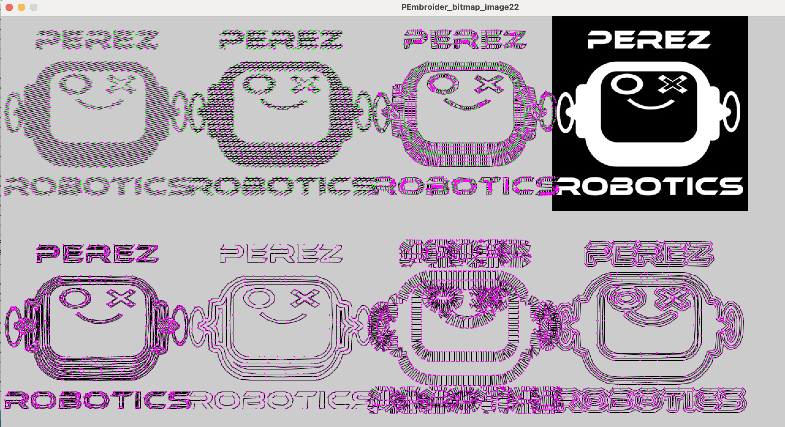
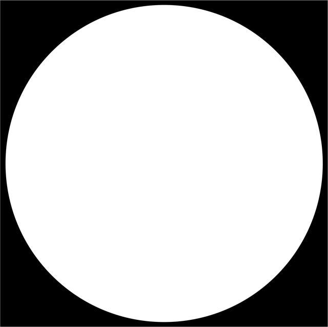
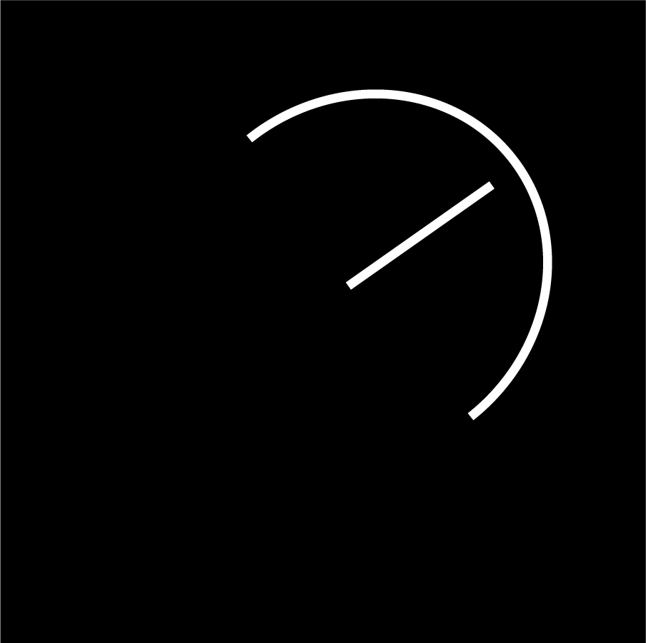

Design and produce something with a digital process
(incorporating computer-aided design and manufacturing) not covered
in another assignment, documenting the requirements that your
assignment meets, and including everything necessary to reproduce
it.
Choosing Embroidery
This year was an interesting year at work where I took over a lot of clubs and one of the clubs was STEAM club where the main competition was one called Ten80 Racing which I like to describe as mini NASCAR. If you have students that like RC racing or RC cars in general it is an excellent competition. Part of the competition is a business pitch and a company identity and one of the students created a patch for our team the WolverRacers.
In that he created a really cool, in my opinion, logo for the team and We wanted to make a patch out of that for the team to wear. I purchased a pair of Brother Embroidery Machines to get them made. Specifically this model:
And the Logo the student created is this one:
First things first, I had to figure out how to embroider period. To do this I used the built in images that are on the embroidery machine. Specifically the letters. Nothing is more simple than that. You click on the screen, load up the letters you want. And you are prompted to resize rotate etc.
Loading the Embroidery Machine
The next most important step is loading up the embroidery machine with cloth and thread. The first thing to do is cut out a square of material slightly larger than the hoop that you will be loading it up on.
Once that is cut, you separate the two sides of the hoop and sandwich the cloth between them. Making sure to keep a good tension for the cloth almost like a drum. You have to pull it tight so that the cloth doesnt bounce and embroidery machine does not skip stitches or cause a knot.
Next you have to load a bobbin onto the bottom side of the embroidery machine. Usually machines are clearly labelled with how to do this like in the image here:
But you can see a quick tutorial on how to load it up here:
If all works well you will have a thread in your bobbin and a thread through your needle waiting your hoop and cloth.
The next step is to press go on the embroidery machine after dropping the foot and hopefully if it all works it will look something like this:
And while its working it will look like this:
The first test came out pretty good, some of the stitches were too tight and it pulled ont he cloth but other than that it was a great first try. I ran another test looking to see if I could get slightly better results and honestly I did not mind the outcome one bit. It came out pretty well but now was the next step, finding a program to either create images, or translate images into ones that could work on the embroidery machine.
Settling on PEmbroider
When I received the embroidery machine I asked the drama teacher about what would be a good program to run an embroidery machine with and she mentioned Hatch embroidery. At that point I signed up for a 30 day free trial. Unfortunately, that was back in February and it ran out at this time. Subscriptions ran at $500+ at this time and that wasn't viable for the school at this time. Luckily, this week's fabacademy schedule had the program PEmbroidery on it.
If you click on the image above it will take you straight to the GitHub and Documentation. To have this work you need to have installed Processing. The install for this is simple and you just need to follow along. PEmbroider is a library for the program and to install it are the following steps:
Steps to Install PEmbroider
Download the .zip file on PEmbroider github
Unzip the file.
Find your Processing file folder - normally it is in /documents
Drag the PEmbroider file into the documents/Processings/libraries
Once it is installed the system allows you to use examples to run the stitching so I decided to run the "Hello World" file that the github. This is an interesting file because it shows you how to make shapes on the embroidery machine. I am going to use this later to add a circle or shapes to the actual WolverRacers Logo. In this case all I did was export the file and upload it onto the embroidery machine. The file will export into the sketch folder for Processing. All you have to do is upload it to a USB and pop it into the machine. It will come into the screen and show up like so:
Running it came through very nice and I was ready to start trying to create files of my own:
Creating files using PNGs
The first thing I wanted to do was create a file using the png of the "Little Guy" robot I have been using in my other projects and the inspiration for "DAP-R's" face. The only thing I had was an image of DAPR in color, but looking at the documentation you have to change the file to be black background and whatever is in white is what will be embroidered. Knowing this I opened up the file on Illustrator and turned everything in color to white and added a black background. The file ended up looking something like this:
Once I had that file prepped one of the example programs was titled "PEmbroider_Bitmap_Image_1" where this file would create any png image and convert it to different embroidery forms. The default is a broken heart and it looks something like this after processing:

After adding in the image I made and shifting a few things so you can see all the files the images and embroidery files come out something like this:

Mind you, when exporting this it will take a few minutes, or at least what feels like that so be patient for the program to run.
The Code
The PEmbroider code is pretty simple to work with and there is a pretty well written Cheat Sheet here: PEmbroider Cheat Sheet
// Test program for the PEmbroider library for Processing:
// Filling a pre-loaded "image" using various hatching methods.
import processing.embroider.*;
PEmbroiderGraphics E;
void setup() {
//set up the size of the output image
size(1500, 700);
//not sure what this does but all the samples have it
noLoop();
// Load the bitmap image to embroider.
// Should consist of white shapes on a black background.
//make sure the images you are using are stored in the /data folder of the sketch.
PImage myImage = loadImage("PerezRoboticsTransform Small.png");
// Create and configure the PEmbroider object, E
E = new PEmbroiderGraphics(this, 500, 500);
//It is important that you put the output type of this to the sort of file that you are using. In my case .dst
String outputFilePath = sketchPath("PEmbroider_bitmap_image_1.dst");
E.setPath(outputFilePath);
//-------------------
// Initial setup of PEmbroider object.
E.beginDraw();
E.clear();
E.fill(0, 0, 0);
E.noStroke();
//-------------------
// Parallel hatch
E.setStitch(5, 30, 0);
E.hatchMode(PEmbroiderGraphics.PARALLEL);
E.hatchAngleDeg(15);
E.hatchSpacing(3.0);
E.image(myImage, 0, 0);
//-------------------
// Cross hatch
E.setStitch(5, 30, 0);
E.hatchMode(PEmbroiderGraphics.CROSS);
E.HATCH_ANGLE = radians(30);
E.HATCH_ANGLE2 = radians(0);
E.hatchSpacing(4.0);
E.image(myImage, 300, 0);
//-------------------
// Dense concentric hatch
E.hatchMode(PEmbroiderGraphics.CONCENTRIC);
E.hatchSpacing(2.0);
E.setStitch(5, 20, 1.0);
E.image(myImage, 0, 350);
//-------------------
// Sparse concentric hatch
E.hatchMode(PEmbroiderGraphics.CONCENTRIC);
E.hatchSpacing(7.5);
E.image(myImage, 300, 350);
//-------------------
// Draw fat perpendicular stroke only, no fill.
E.noFill();
E.stroke(0, 0, 0);
E.setStitch(5, 30, 1.0);
E.strokeWeight(16);
E.strokeSpacing(4);
E.strokeMode(PEmbroiderGraphics.PERPENDICULAR);
E.image(myImage, 600, 350);
//-------------------
// Draw fat parallel stroke only; no fill.
E.stroke(0, 0, 0);
E.noFill();
E.strokeWeight(16);
E.setStitch(5, 30, 1.0);
E.strokeMode(PEmbroiderGraphics.TANGENT);
E.strokeSpacing(4);
E.image(myImage, 900, 350);
//-------------------
// Draw "spine" hatch (experimental), which is
// based on distance transform & skeletonization.
// Here, we use the (best) "vector field" (VF) version.
E.pushMatrix();
E.translate(600, 0);
E.setStitch(5, 25, 0.0);
PEmbroiderHatchSpine.setGraphics(E);
PEmbroiderHatchSpine.hatchSpineVF(myImage, 3.0);
E.popMatrix();
//-------------------
// Draw the original raster image (for reference).
image(myImage, 900, 0);
//-------------------
// Be sure to un-comment E.optimize() and E.endDraw() below
// when you want to actually export the embroidery file!!!
//
E.optimize(); // really slow, but good and important
E.visualize();
// E.endDraw(); // write out the embroidery file
E.printStats(); // tell us about it
}
Running Tests
Using this code I ran a few tests by commenting out all of the versions of the fill and hatching I didn't want to use. Of these a concentric fill came out the best for me. You can see it in the images below:
Adding More Color
The next thing that I wanted to do was to add more color to the embroidery. The original design I was using for this uses two colors but I thought I could use 3 colors for this instead and make it work better. My theory was that if I created three files, each that would be filled with the different color thread I wanted I could upload these sequentially and it would allow me to make this design work. So the first thing I did was drop back into illustrator and turn layers on and off until I was happy with the outcome of the images that I was using. In this case I used these three files.

I ran each of these separately through the PEmbroider Program and came out with three separate files:
After uploading them one by one I was able to have the embroidery machine run through the files and layer the thread almost like layering vinyl. Though the image came out very tight and lopsided and you could not read the text, I think it came out pretty good for a first try.
Video of the process of embroidering:
As you can see it would just layer the thread on top of the previous layer allowing the colors to shine through.
The final outcome was a patch, though non legible of the file that I wanted to create for my "little guy" image. I will be adding this to my backpack soon!
Making a Multi-Color as one file
After I dove into the PEmbroider Documentation a little more I saw that there was a way to do more than one image at a time and process them as different "colors" for the embroiery machine so that the image could come out as one file and I would not have to switch files in the middle of the embroidering process. So I decided to go back and recreate the images for the WolverRacers logo with this.

After this I wrote a program to have the WR as one color with the checkered flag, then added in an outline in another color followed by the speedometer dial in the same color as the outline. I did not want to have to draw out a circle in illustrator, so instead what I did was code out a circular ellipse in the PEmbroider program as you can see in the code below.
// Test program for the PEmbroider library for Processing:
// Making a multi-color embroidery
// based on individually colored .PNGs
import processing.embroider.*;
PEmbroiderGraphics E;
PImage LOGO;
PImage DIAL;
void setup() {
noLoop();
size (1000, 1000);
E = new PEmbroiderGraphics(this, width, height);
String outputFilePath = sketchPath("WolverRacersMulti.dst");
E.setPath(outputFilePath);
// The image should consist of white shapes on a black background.
// The ideal image is an exclusively black-and-white .PNG or .GIF.
LOGO = loadImage("WolverRacers2.png");
DIAL = loadImage("WolverRacers3.png");
E.beginDraw();
E.clear();
// Stroke properties
// Fill properties
E.hatchSpacing(2.0);
//Use the image to create the center image for the patch.
E.strokeLocation(E.OUTSIDE);
E.fill(255,0,0);
E.stroke(0,0,255);
E.strokeWeight(10);
E.strokeSpacing(2);
E.hatchMode(CROSS);
E.strokeMode(E.TANGENT);
E.image(LOGO,100,50);
//Creating the DIAL AS ONLY Outline
E.noStroke();
E.fill(0,0,255);
E.hatchMode(CROSS);
E.image(DIAL,100,50);
//Create border and outline for the image itself
//Ellipses are specified by their center and a 60 sided circle is enough detail
E.ellipseMode(CENTER);
E.CIRCLE_DETAIL = 60;
E.toggleResample(true);
//Draw Outline of a circle around Patch
E.noFill();
E.stroke(0,255,0);
E.strokeWeight(40);
E.strokeSpacing(2);
E.strokeMode(E.PERPENDICULAR);
E.setStitch(10,50,0);
E.ellipse(500,500,900,900);
//-----------------------
E.optimize(); // slow, but good and important
//setting first vaule true shows colorized preview
E.visualize(true, false, false); //
E.printStats(); //
E.endDraw(); // write out the file
}
//--------------------------------------------
void draw() {
;
}
The code above outputs a file that looks like this where every color is a different form of embroidery thread and it can just be uploaded one after the other in the embroidery machine. All that is needed is a reload between color changes.
When you upload it into the embroidery machine you can even see that the different colors are separated by design. This allows all of this to make a more efficient print.
The embroidery happened just like when I uploaded separate files, except each of them was layered on top of each other naturally and I did not have to change files and hope alignment did not change.
A great success
As you can see above the mission to make a patch was a great success. Though the files did not come out as cleanly as I would like and some of the stitches are too tight I worked it out pretty well. I do plan on making a few changes to my file and testing the embroidery again so that I may make more of these in a quicker manner as this file took over one hour to make.
If you would like to support Belen with a WolverRacers patch of your own, feel free to use this file to make it on your own Brother 550.